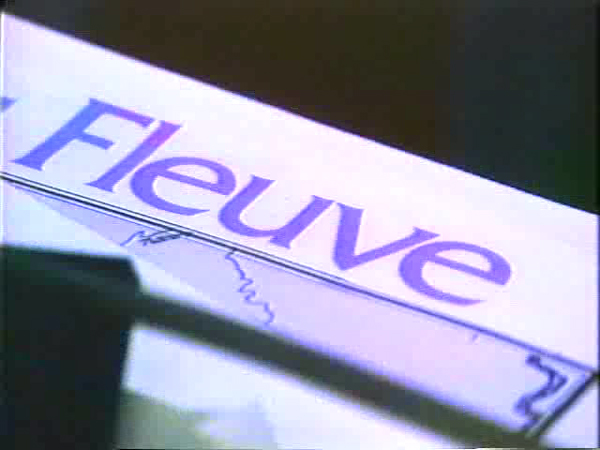
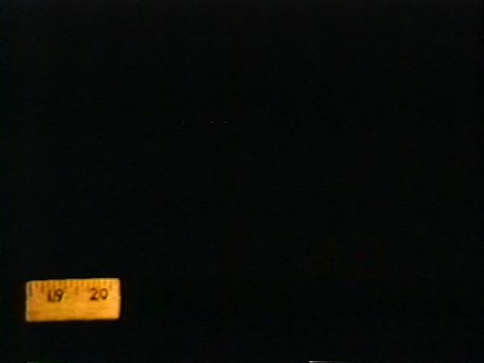
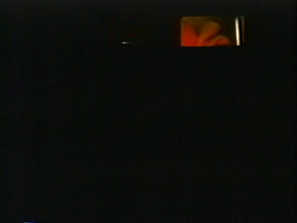
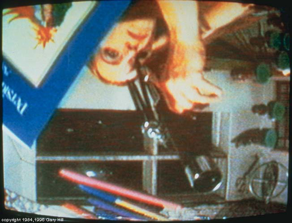

-
Atypical Usage: Gary Hill, George Quasha and Charles Stein at EAI
by Stephen Squibb April 28, 2010
In the Nature of Language, Heidegger writes:
But when does language speak itself as language? Curiously enough, when we cannot find the write word for something that concerns us, carries us away, oppresses or encourages us. Then we leave unspoken what we have in mind and, without rightly giving it thought, undergo moments where language itself has fleetingly and distantly touched us with its essential being.
Midway through his sensational opening discussion of Gary Hill’s work last night at Electronic Arts Intermix, George Quasha said something similar: “Language reveals itself through atypical use.” The two sentiments are similar, but there is an important distinction between the failure of language to come when we call it, of our finding-ourselves-without-it, of literally being at a loss for words, and it’s consciously atypical deployment. The former is an experience that takes place amidst everyday life, albeit one that pulls us from it, while the later, as Quasha indicates, is a function or strategy of art, or more appropriately, poetry. Thus the distinction is between being subject to language, and summoning it to reveal itself on its edges and amongst its failures.
No one inhabits the edges of language with more grace than Gary Hill. No one makes its failures more alluring. Technically a book launch for An Art of Limina: Gary Hill’s Works and Writings, a new book by Quasha and Charles Stein, (who, along with Hill himself, was also in attendance) the evening is better described as an intellectual and artistic portrait. Both Hill and his collaborators share a deep and abiding fluency with the mid-twentieth century phenomenological tradition; late Heidegger, yes, but also Blanchot. Theirs is a full language, heavy, even; pre-Derrida in exactly the same way Beckett is pre-Derrida. Which is to say that for Hill, Quasha and Stein, language has not yet exchanged its essentially pregnant mystery for a relentless complicity with violence and domination. Language is not yet the enemy it later became, not only for French thinking but for American art as well.
Of course to speak in terms of chronology is almost impossible. Hill and company are making work in the 1980s that engages in a remarkable dialogue with ideas written in France and Germany in the 1950s, whereas other American video, both before and after, takes its inspiration from (chiefly French) thinking done in the 1960s and 1970s. The coexistence of both tendencies in American art from 1970 or so on reminds us of the complexity of the intellectual exchange between Europe and America in the second half of the twentieth century. Far from being a sort of straightforward progression of styles from Marxism to Phenomenology, from Structuralism to Post-Structuralism, each of these terms infects the other, surfacing at various times an in various ways. Thus the actual progression is linked more closely, perhaps, to individual careers – one can say, for example, from Sartre to Levi-Strauss to Derrida and in a certain way come closer to an accurate accounting. Heidegger is specifically absent here but present nevertheless, just not as a particular, bounded moment.
In any case, Hill and his collaborators gentle refusal of the deconstructive tendency in favor of a more classically hermeneutic encounter remains striking in its power and consistency. The incredible eclecticism of art language in the present moment, with its increasingly omnivorous intellectual appetites, is, even over several hundred pages, rarely able to penetrate as deeply as Quasha did in the first five minutes of his introduction. The internal exchange within a given body of thought, even one as notoriously difficult as phenomenology or hermeneutics, produces a language optimized for quick depth. Thus, in his remarkable thematization of Hill’s work and the text that he and Stein have produced to further it, Quasha was able to say a great deal very quickly Should a video or a transcript of the evening be made available I would highly recommend it from start to finish. For my purposes, however, I would like to take up a unique claim laid down by Quasha in order to return, back through Heidegger, to Hill’s work itself.
Quasha proposes that Hill’s encounter with language began in the way he encountered technology. Early in the evening, Hill himself recounted an anecdote about an emotionally-disturbed child complaining of a ‘loss of technology.’ On the one hand, it would seem clear what technology refers to: the actual machinery utilized in the production of the work. On the other hand, though, Hill’s anecdote should give us pause. To speak of a ‘loss of technology,’ is to speak of a lost capacity, of an absence of a certain, but not necessarily specific, kind.
Heidegger writes, in The Question Concerning Technology:
Technology is a mode of revealing. Technology comes to presence in the realm where revealing and unconcealment take place, where, aletheia, truth, happens. In opposition to this definition… one can object that… at best it might apply to the techniques of the handcraftsman but that it simply does not fit the modern machine-powered technology. And it is precisely the latter and it alone that is the disturbing thing, that moves us to ask the question concerning technology per se.
Heidegger is here highlighting the strange nature of modern technology by contrasting it to its historical understanding as a mode of revealing. Hill’s encounter is certainly with modern technology – but is that the technology of whose loss he speaks? Heidegger insists on the lack of a fundamental difference between the two:
What is modern technology? It too, is a revealing… And yet the revealing that holds sway throughout modern technology does not unfold into a bringing-forth in the sense of poiesis. The revealing that rules in modern technology is a challenging, which puts to nature the unreasonable demand… A tract of land is challenged into the putting out of coal and ore. The earth now reveals itself as a coal mining district, the soil as a mineral deposit… The work of the peasant does not challenge the soil of the field… but… (with modern technology) the cultivation of the field has come under the grip of another kind of setting-in-order, which sets upon nature. It sets upon it in the sense of challenging it. Agriculture is now the mechanized food industry. Air is now set upon to yield nitrogen, the earth to yield ore, ore to yield uranium, for example…The revealing that rules modern technology has the character of a setting-upon, in the sense of a challenging-forth.
Thus even though technology remains a mode of revealing, within modernity it is a revealing of specific kind. What distinguishes it is the powerful unreason at work in its demands on nature. It seems to me, then, to say that Hill’s encounter with language begins in the same way as his encounter with technology is to locate three things within these early works: the revealing proper to technology as such, the revealing peculiar to modern technology: this setting upon and challenging-forth, and language. In order to understand how they might fit together requires we take one more step with Heidegger.
Returning to this kind of revealing proper to modern technology, Heidegger asks:
What kind of unconcealment is it, then, that is peculiar to that which comes to stand forth through this setting-upon that challenges? Everywhere everything is ordered to stand by, to be immediately at hand, indeed to stand there just so that it may be on call for futher ordering… We call it the standing-reserve. The word expresses something more, and something more essential, than mere ‘stock…’ whatever stands by in the sense of standing-reserve no longer stands over against us as object. Yet an airliner that stands on the runway is surely an object. Certainly. We can represent the machine so. Revealed, it stands on the taxi strip only as standing reserve, inasmuch as it is ordered to ensure the possibility of transportation.” (Emphasis mine)
Standing-reserve is thus a sort of phenomenological approach to the availability demanded of commodities and assets under the present conditions of production. What is significant for Heidegger, however is the way in which this fluidity is extracted from nature, challenged-forth by the setting-upon that is proper to the peculiar revelation of modern technology. I would like to draw a parallel between this challenging and Gary Hill’s approach to language. Thus we might say Hill’s work sets upon language, challenges it, utilizing modern technology in an attempt to reveal language as standing-reserve, to remove its standing over us as object.
Consider Around and About, the first work screened last night. In it, Hill puts a different image to every syllable he speaks. He was quick to offer that many images would have done, “not any, but many many.” Watching it, one has the experience of the possibility of a relationship between what is being seen and what being said, as Stein pointed out, without ever being clear if that relationship is actually present. By penetrating the internal mechanisms of language and manipulating them, Hill has revealed them to be ready-to-hand in the same way that the internal mechanisms of agriculture are available to industrial farming. However, and this is key, language does not offer itself as standing-reserve in the same way. Hill sets upon language in the way modern technology sets upon the former peasant’s field, but language cannot be made to yield the way the field can. It cannot be mined. It withdraws.
In the second work shown, Happenstance, we are again overwhelmed by language, as many different streams of text converge at once amidst a multiplicity of images. Modern technology has enabled Hill to challenge language, understood specifically as our capacity to receive it; pushing it to the point we can grasp only its overflowing. Far from being revealed as a resource to be extracted, language appears instead a central absence, beyond our capacity for mastery. Language will not cease to stand over us as a certain kind of object. Hill’s relentless pursuit of its edges, his atypical usage, reveals it, but not in the way of modern-technology, not, that is, as standing-reserve, but instead as something else. Here we arrive at the return of the original, historical essence of technology once again, as that earlier, less determinate form of revealing. This is the technology of whose loss we can speak, and it is the encounter with this technology, this original revealing, that begins Hill’s corresponding encounter with language.
Thus the utilization of modern technology to reveal the impossibility of language’s ever standing-reserve, of its ever being orderable, in that sense, is at the heart of Hill’s enterprise. Language, we find, is proper to that previous mode of technology, of simple revelation, it cannot be modernized, at least not in the way agriculture, or mining, or transportation can. Language persists instead as a sort of horizon of human understanding, and Hill paints the impossibility of its enframing, of its ever being fully set-upon.
Instead, the reverse is true, language challenges us, sets upon us and it is we who risk being enframed by it. This is clear in Why Do Things Get In A Muddle? one of the last works showed last night. In it, performers, including Stein, read a script backwards, but the tape is played in reverse. The result is as engaging as it is uncanny. We can sort of make out the words, but we never lose our awareness of their being something strange and alien about them. The camera rotates endlessly to further distort our access to something like perspective. Language is again made strange; we are distanced from it, but far from enabling us a greater control or understanding, we are revealed instead, perched precariously within it, peering out.
We are now able to more fully grasp what the phrase “Language reveals itself through atypical use,” means in the context of Hill’s work. This atypical use is of a specific kind; it’s a sort of performative rehearsal of modern technology’s relationship to nature, specifically with regards its machine-powered manipulation. Language arrives precisely when, being set-upon, it refuses to appear as standing-reserve. It is only in this reference to this refusal that we can speak of language’s having been revealed. Thus Hill detours through modern means of representation in an effort to trace a return to language and a lost technology.
This loss ought to be melancholic, by all rights, but of course Hill and his collaborators are too many poets for this to be a real possibility. Everywhere their writing is of a wonderful suggestiveness, their turns of phrase so well-tuned as to risk upstaging their intention. But thank God for that, really, as these little bursts of affection are so many reminders, amidst a relatively alienating landscape, of our essential affinity with language and our being at home within it.
If I had one complaint, it’s that three individuals with such an obvious appreciation for poetry and philosophy have made a book that weighs five and half pounds. How such an object is to enter into the daily rhythm of reading and thinking alongside the reams of texts that inspired it escapes me. No matter, if its half as wonderful as listening to Quasha, Stein, and Hill, it will be well worth setting-upon.